Белорусское кино XX века
Раздел о кино построен вокруг нескольких фильмов, каждый из которых связан с определённым историческим периодом. «Лесная быль» даёт представление о революционной борьбе 1920-х годов, «Красные листья» раскрывают тему борьбы в Западной Беларуси в 1930-е годы. «Альпийская баллада» и «Часы остановились в полночь» показывают Великую Отечественную войну с разных сторон: через историю побега из плена и через подпольное сопротивление в оккупированном Минске.
Каждый фильм сопровождается кадрами и информацией о нём. Такой формат позволяет изучать материал в удобном темпе и формировать целостное представление об эпохе - что особенно важно, поскольку традиционные методы обучения, ориентированные на линейное восприятие, плохо согласуются с особенностями клипового мышления.
Как рождалось белорусское кино
Белорусское кино начиналось не с игровых картин, а с хроники. В 1922 году при Наркомпросе БССР было создано управление по делам кинематографии - «Белгоскино», а в 1924 году на базе в Ленинграде образовалась одноимённая студия. У истоков национальной кинематографии стояли Юрий Тарич и Владимир Гардин, один из основателей первой Госкиношколы, будущего ВГИКа. Именно они заложили традицию, которая позже определила лицо белорусского кино: внимание к историческому материалу, стремление говорить о сложном просто и честно.
В 1930-е годы, с приходом звука, на первый план выходят фильмы о формировании нового человека. Тогда же снимаются экранизации - «Поручик Киже» по Юрию Тынянову, «Соловей» по Змитроку Бядуле, чеховские «Маска», «Налим», «Медведь», «Человек в футляре». Особое место занимает «Поручик Киже» (1933) - экспериментальная по режиссуре, операторскому и музыкальному решению картина, созданная режиссёром Александром Файнциммером, оператором Александром Кольцатым и композитором Сергеем Прокофьевым. В 1939 году в Минске было построено здание киностудии, и кинопроизводство окончательно перешло на территорию республики.
После войны, в годы «оттепели», белорусское кино переживает обновление. Расширяется тематический диапазон, более самостоятельной становится художественная интерпретация прошлого. В 1964 году на экраны выходит фильм Виктора Турова «Через кладбище» - полнометражный дебют выпускника мастерской Александра Довженко и Михаила Чиаурели. Молодой режиссёр одним из первых в стране заговорил о войне без пафоса, показав её глазами тех, кто пережил оккупацию. Его картины «Через кладбище» и «Я родом из детства» образовали дилогию, во многом автобиографическую. По опросу белорусских критиков «Я родом из детства» признана лучшим фильмом за всю историю белорусского кино. Тема Великой Отечественной войны остаётся центральной и в последующие десятилетия - к ней возвращаются Борис Степанов, Игорь Добролюбов, Валерий Рубинчик. А в 1985 году Элем Климов снимает в Белоруссии по сценарию Алеся Адамовича «Иди и смотри» - фильм, включённый ЮНЕСКО в список 100 лучших фильмов мира.
«Лесная быль» (1926)
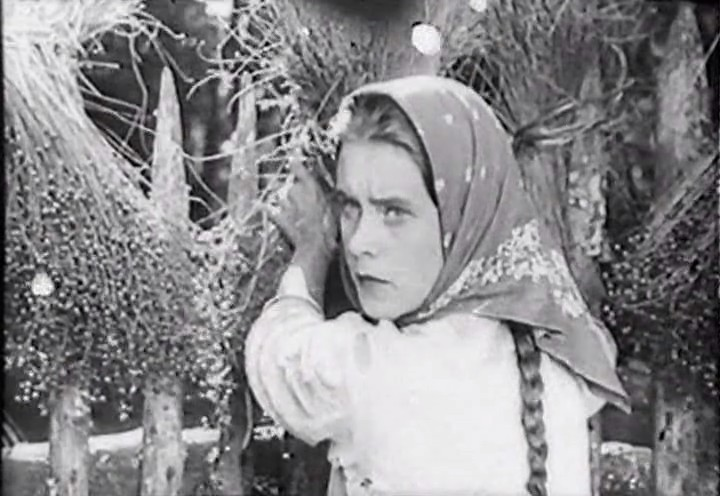
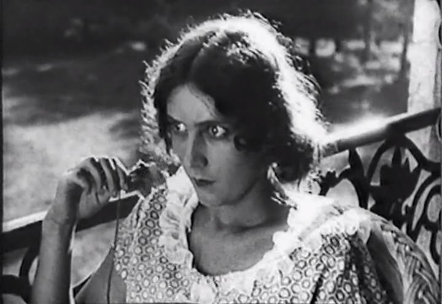
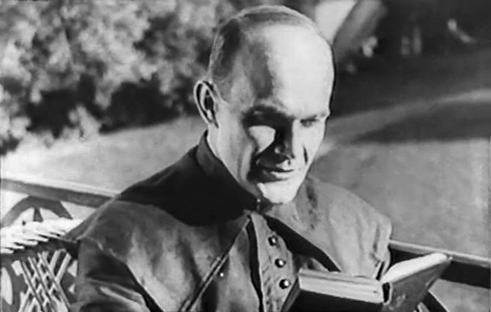
«Лесная быль» - первый белорусский художественный фильм, снятый Юрием Таричем в 1926 году на студии «Белгоскино». Действие происходит в 1920 году, в разгар Гражданской войны, когда территория Беларуси была ареной столкновений между Красной Армией и польскими войсками. Юный партизан Гришка становится разведчиком и помогает бороться с поляками, а его отец оказывается в стане врага - этот конфликт поколений и классов стал центральной драмой картины. Фильм важен не только как исторический документ, но и как первый опыт создания национального экранного образа: белорусский лес, хаты, партизанская борьба - всё это впервые появилось на киноэкране. Картина зафиксировала, как в 1920-е годы формировался канон революционно-освободительной темы в белорусском искусстве. Для своего времени «Лесная быль» была технически скромной, но именно с неё начинается отсчёт белорусского игрового кино. Сегодня она воспринимается как своего рода «нулевая степень» национальной кинематографии - точка, от которой можно проследить всю дальнейшую эволюцию.
«Красные листья» (1958)
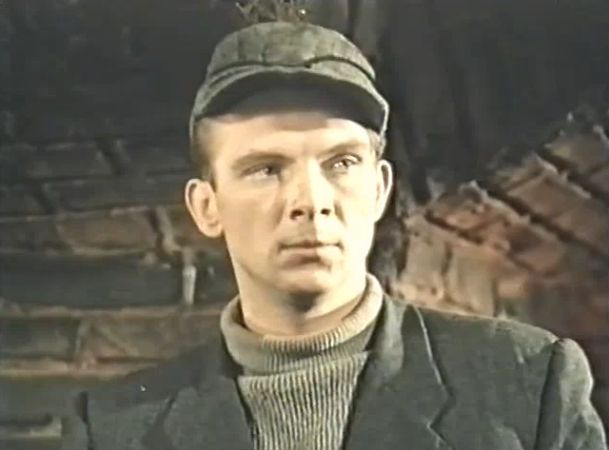
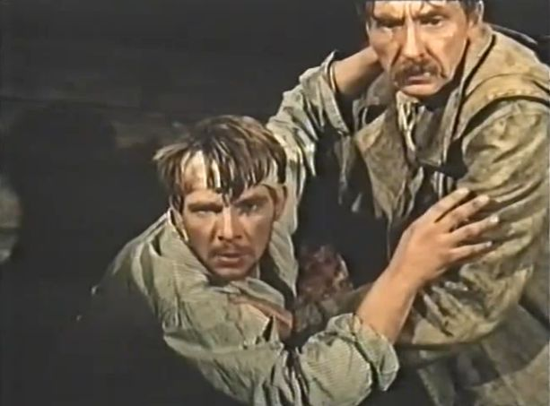
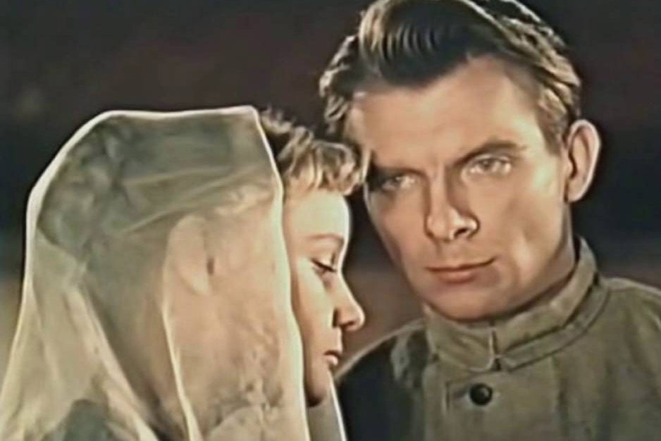
«Красные листья» - фильм Владимира Корш-Саблина, снятый в 1958 году и ставший одним из первых обращений белорусского кино к теме Западной Беларуси. Картина основана на биографии Сергея Притыцкого - реального исторического деятеля, участника борьбы за воссоединение Западной Беларуси с БССР. Действие разворачивается в середине 1930-х годов, когда западнобелорусские земли находились в составе Польши и подвергались национальному гнёту. Фильм показывает подпольную борьбу, аресты, суды и сопротивление - всё то, что стало важной частью исторической памяти 1920-1930-х годов. Для белорусского зрителя это была возможность увидеть на экране ту часть национальной истории, которая долгое время оставалась на периферии официального повествования. Картина снималась в период «оттепели», когда стало возможно более сложное и человечное изображение прошлого. «Красные листья» стали важным шагом в формировании исторического кино Беларуси и во многом подготовили почву для последующих фильмов о Западной Беларуси.
«Часы остановились в полночь» (1958)
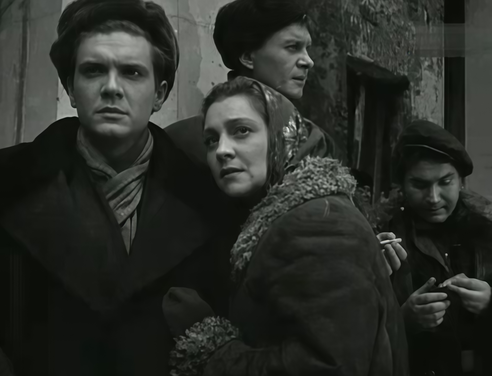
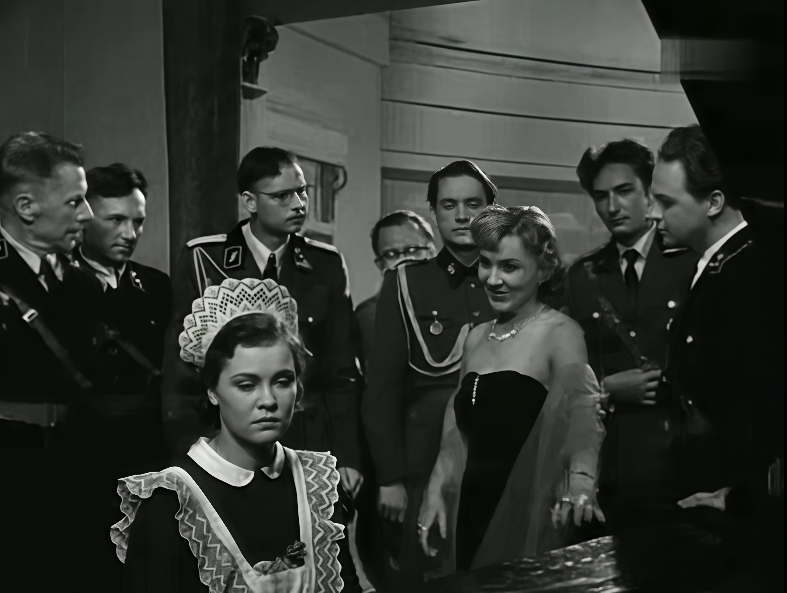
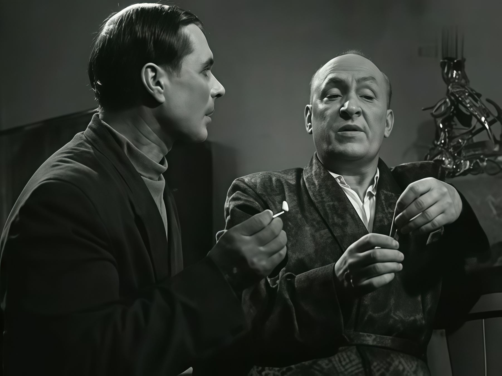
«Часы остановились в полночь» - фильм Николая Фигуровского, вышедший на экраны в 1958 году и посвящённый одной из самых известных страниц белорусского сопротивления. В основе сюжета - реальная подпольная операция по уничтожению гауляйтера Беларуси Вильгельма Кубе в оккупированном Минске в 1943 году. Картина снималась «по горячим следам» - всего через полтора десятилетия после войны, когда многие участники событий были ещё живы. Это придаёт фильму особую документальную достоверность и эмоциональную силу. Режиссёр показывает не только саму операцию, но и атмосферу оккупации: страх, подпольную работу, ежедневный риск. Фильм стал одним из первых художественных свидетельств подпольной борьбы в Беларуси и во многом задал канон военного кино на десятилетия вперёд. Для своего времени он был технически и драматургически новаторским, сочетая репортажную манеру с психологической глубиной. Сегодня «Часы остановились в полночь» воспринимаются как классика белорусского военного кино и важный исторический документ эпохи.
«Альпийская баллада» (1965)
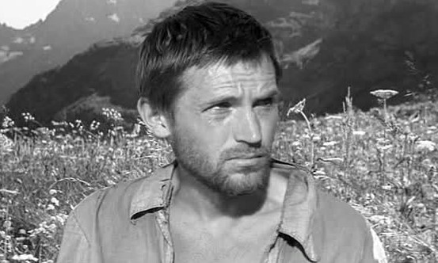
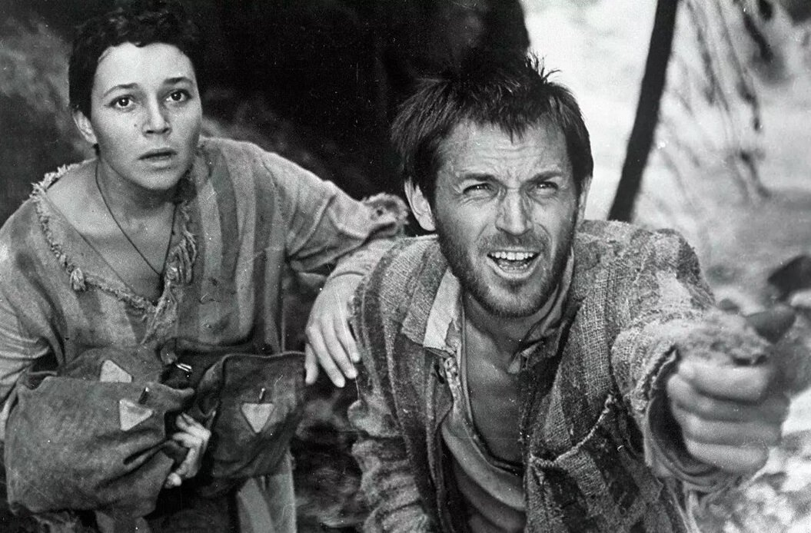
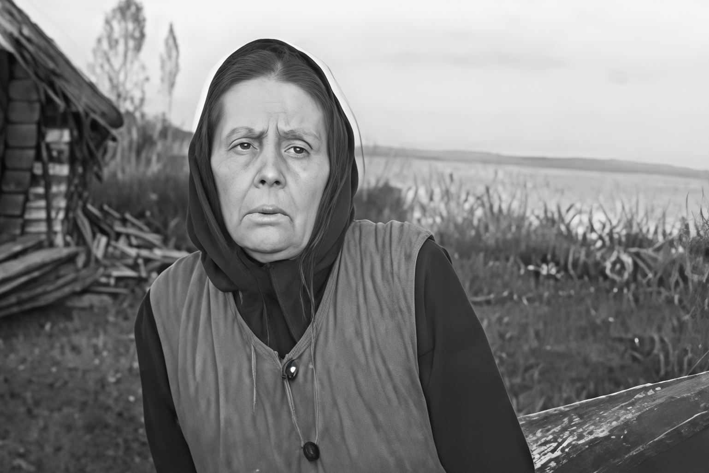
«Альпийская баллада» - фильм Бориса Степанова, снятый в 1965 году по повести Василя Быкова. Это история о побеге советского военнопленного Ивана и итальянской девушки Джулии из фашистского концлагеря в Альпах. Действие происходит в 1944 году, когда до конца войны оставались считанные месяцы, но смерть всё ещё была повсюду. Фильм стал одним из первых в белорусском кино, где война показана не через батальные сцены, а через человеческие отношения - любовь, доверие, взаимопомощь. Картина снималась в период «оттепели», когда в искусстве стало возможно более сложное и неоднозначное изображение человека на войне. Режиссёр сознательно уходит от пафоса и показывает войну как трагедию, которая ломает судьбы, но не убивает в людях человеческое. «Альпийская баллада» стала важным шагом в развитии белорусского военного кино и во многом предвосхитила более поздние фильмы о войне. Сегодня она воспринимается как один из самых лиричных и человечных фильмов белорусского кинематографа.